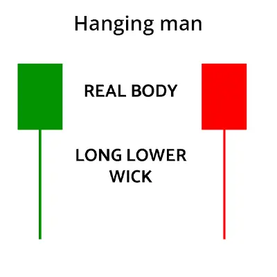

হ্যাংগিং ম্যান প্যাটার্ন হলো একটি ট্রেডিং প্যাটার্ন যা শেয়ার বাজারে উধ্বমুখী
প্রবণতার অবসান এবং নিম্নমুখী প্রবণতার সুচনা নির্দেশ করে। এই প্যাটার্নটি
একটি একক ক্যান্ডলেস্টিক দিয়ে গঠিত হয়। এটি একটি ছোট দীর্ঘ উধ্বমুখী
ক্যান্ডলেস্টিক যা তার উ্ধ্বমুখী ওপেনিং প্রাইসের কাছাকাছি বন্ধ হয়।
হ্যাংগিং ম্যান প্যাটার্ন একটি দুর্বল নিনমুখী প্রবণতার ইঙ্গিত দেয়। এই প্যাটার্নটি
দেখা দিলে, শেয়ার বাজারে নিম্নমুখী প্রবণতায় ট্রেডিং করা যেতে পারে।